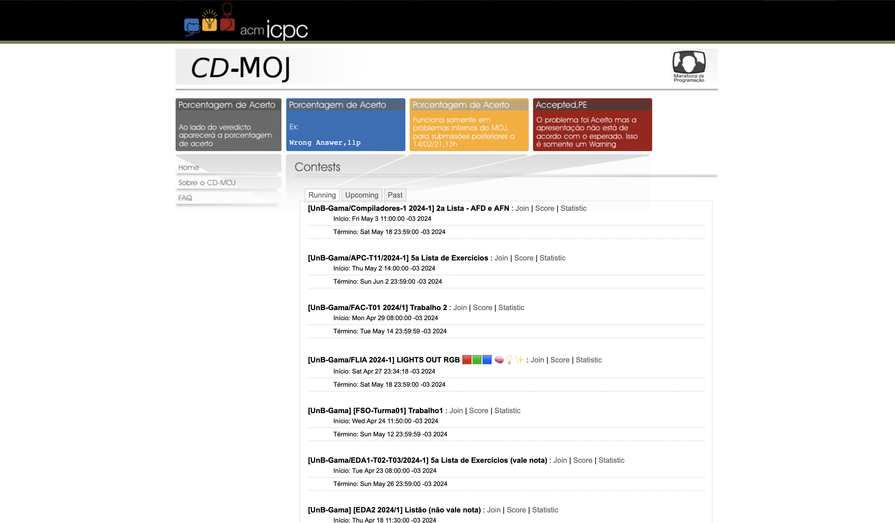
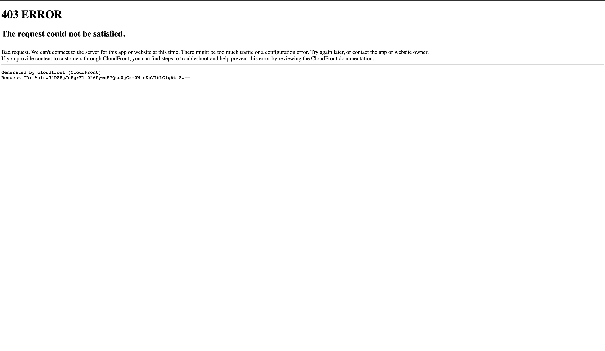
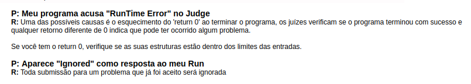

Princípios Gerais
Introdução
Para que um modelo conceitual seja eficaz e atenda às necessidades dos usuários, permitindo-lhes aprender e adaptar-se de maneira intuitiva e rápida, ele deve aderir a princípios e diretrizes gerais de design. Este design deve facilitar a compreensão das ações necessárias em determinados momentos, utilizando restrições para guiar o usuário; proporcionar uma clara visualização dos aspectos importantes, incluindo o modelo conceitual do sistema, as ações alternativas e suas possíveis consequências; e permitir uma fácil avaliação do estado atual do sistema. Isso é alcançado através de mapeamentos naturais que correlacionam as intenções do usuário às ações necessárias, as ações aos seus respectivos efeitos, e as informações apresentadas à interpretação do estado do sistema1. Os desenvolvedores responsáveis por criar este artefato foram: Diego Sousa e João Artur.
Metodologia
Para cada tópico analisado, identificamos a principal contrariedade no site que mais fere o respectivo Princípio Geral, organizando a discussão em dois subtemas: Definição e Violação. A análise das violações foi conduzida individualmente por cada participante, focando exclusivamente na versão desktop do site para determinar onde ocorrem tais desvios. Este processo detalhado visa compreender claramente as falhas e identificar onde elas se manifestam no site.
Correspondência com as Expectativas dos Usuários
Definição
Neste tópico, o foco é a fluidez e naturalidade com que o usuário interage com o sistema projetado. É essencial analisar as variáveis psicológicas e físicas que influenciam a interação dentro do ambiente do sistema. Assim, é importante garantir que o usuário possa claramente entender as seguintes relações: entre suas intenções e as ações possíveis; entre as ações executadas e seus respectivos efeitos no sistema; entre o estado real do sistema e o que é percebido pelos sentidos do usuário, como visão, audição ou tato; e entre o estado percebido do sistema e as necessidades, intenções e expectativas do usuário1.
Violação
Na Figura 1, observa-se uma violação do princípio de Correspondência com a Expectativa do Usuário, pois no canto superior da tela, o texto "acmICPC" parece ser clicável e gera a expectativa de direcionar para um link útil. No entanto, ao clicar, o usuário é redirecionado para uma página que exibe o erro 403, conforme ilustrado na Figura 2.
Figura 1 - Violação Correspondência

Figura 2 - Violação Correspondência

Simplicidade nas Estruturas das Tarefas
Definição
A simplificação do planejamento e resolução de problemas é crucial para diminuir a complexidade das tarefas, que podem ser desnecessariamente complicadas. Para isso, a simplificação pode ser abordada de quatro maneiras distintas1:
- Preservar a essência da tarefa enquanto se adicionam ferramentas que auxiliam na sua execução;
- Tornar visíveis elementos anteriormente obscuros para o usuário, melhorando assim seu controle sobre a tarefa e o feedback que ele recebe;
- Automatizar a tarefa total ou parcialmente;
- Modificar a natureza da tarefa para torná-la mais acessível.
Violação
A violação do princípio da Simplicidade nas Estruturas das Tarefas fica clara na Figura 3, onde, ao analisar a resposta de um problema, o usuário não consegue determinar quais entradas estão provocando o erro de "time limit exceeded" ou compreender as causas de outros tipos de falhas.
Figura 3 - Violação Simplicidade

Equilíbrio entre Controle e Liberdade do Usuário
Definição
Baseando-se na noção de que o usuário é o proprietário do computador, da interface e do ambiente de trabalho, um sistema responsivo que faz com que o usuário sinta-se no controle pode facilitar uma aprendizagem rápida e proporcionar uma sensação de domínio. No entanto, é crucial encontrar um equilíbrio, pois enquanto as restrições são necessárias para orientar o usuário e prevenir o excesso de informações — que pode levar a confusão —, o sistema deve sutilmente conduzir o usuário a perceber que existe uma opção predominante2.
Violação
Neste tópico, a principal questão é a limitação na liberdade do usuário. O site limita a capacidade dos usuários de alterarem seus logins e senhas, sendo possível apenas através de intervenção do professor. Mesmo nesses casos, cada aluno recebe credenciais fixas e exclusivas para cada matéria. Isso força o usuário a memorizar várias combinações de login e senha, em vez de permitir o uso de um único conjunto de credenciais mestre para todas as suas disciplinas, conforme demonstrado na figura 4.
Figura 4 - Violação Liberdade

Consistência e Padronização
Definição
Para promover o aprendizado e a usabilidade de um sistema, é aconselhável manter um padrão consistente dentro do modelo conceitual e da interface1. Contudo, em situações onde a consistência é inviável devido à natureza do sistema, torna-se necessário estabelecer mapeamentos arbitrários para padronizar as interações2.
Violação
Uma violação da padronização ocorre quando, ao exibir as respostas, o sistema usualmente mostra a porcentagem de acertos do usuário, mas ocasionalmente falha em apresentar essas informações, demonstrando inconsistência na forma como os resultados são fornecidos ao usuário. Essa falta de padronização na resposta pode confundir e frustrar os usuários, conforme ilustrado na figura 5.
Figura 5 - Violação Padronização

Promoção da Eficiência do Usuário
Definição
Este princípio enfatiza a importância de um sistema ser eficiente o suficiente para permitir que os usuários alcancem seus objetivos com o mínimo de esforço e no menor tempo possível. Isso envolve otimizar os processos mais comuns para serem rápidos e fáceis, além de fornecer atalhos ou métodos avançados para usuários experientes.
Violação
No exemplo do site analisado, uma violação desse princípio pode ser observada na interface de submissão de tarefas, onde múltiplas etapas redundantes são necessárias para concluir uma simples submissão. Isso resulta em um processo lento e frustrante, especialmente para usuários que realizam essas tarefas frequentemente.
Figura 6 - Promoção da Eficiência do Usuário

Solução
Simplificar o processo de submissão de tarefas, reduzindo o número de etapas necessárias e eliminando redundâncias. Introduzir atalhos e opções de submissão rápida para usuários frequentes.
Antecipação
Definição
A antecipação envolve projetar sistemas que preveem as necessidades do usuário e facilitam a realização de tarefas antes mesmo que o usuário reconheça a necessidade de fazê-las. Isso pode incluir sugestões inteligentes, preenchimento automático de dados e adaptações contextuais que simplificam a interação.
Violação
Uma violação do princípio de antecipação ocorre quando o sistema falha em oferecer informações claras e úteis sobre erros ou problemas que o usuário encontra. Isso pode incluir mensagens de erro genéricas ou incompletas que não orientam o usuário sobre como corrigir um problema específico ou quando o sistema não prevê erros comuns que poderiam ser automaticamente detectados e corrigidos.
Figura 7 - Violação Antecipação

Solução
Melhorar as mensagens de erro para que sejam mais detalhadas e orientativas, ajudando os usuários a compreender e resolver os problemas de forma mais eficaz. Implementar sugestões automáticas para corrigir erros comuns.
Visibilidade e Reconhecimento
Definição
Este princípio trata da capacidade dos usuários de reconhecer facilmente o que precisam fazer em uma interface, sem a necessidade de lembrar informações de uma parte da interação para outra. Isso inclui ter elementos de interface visíveis e facilmente acessíveis quando necessário.
Violação
Na página de estatísticas, uma violação significativa do princípio de Visibilidade e Reconhecimento ocorre devido à ocultação de botões importantes. Esses botões, que permitem aos usuários baixar documentos das questões em PDF, mas estão inesperadamente escondidos em um menu pouco intuitivo. Esta escolha de design faz com que muitos usuários não percebam a disponibilidade desses documentos, já que os botões não estão visíveis de imediato.
Figura 8 - Violação Visibilidade e Reconhecimento

Solução
Tornar os botões importantes visíveis e acessíveis diretamente na interface principal. Evitar esconder funcionalidades críticas em menus ou submenus, facilitando o acesso dos usuários.
Conteúdo Relevante e Expressão Adequada
Definição
Esse princípio foca em apresentar ao usuário apenas as informações relevantes para a tarefa em mãos, usando uma linguagem clara e concisa que é facilmente compreendida pelo público-alvo.
Violação
Uma clara violação deste princípio acontece quando o sistema apresenta informações utilizando terminologia técnica ou especializada sem oferecer definições adequadas ou explicações contextuais. Esse excesso de jargão especializado pode alienar usuários que não possuem conhecimento prévio na área, tornando a interface menos acessível e intuitiva.
Figura 9 - Violação Conteúdo Relevante e Expressão Adequada

Solução
Simplificar a linguagem usada na interface, oferecendo definições e explicações contextuais para termos técnicos. Utilizar uma linguagem clara e acessível para todos os níveis de usuários.
Projeto para Erros
Definição
Este princípio aborda a necessidade de sistemas serem projetados considerando a possibilidade de erros por parte do usuário, oferecendo mecanismos robustos de recuperação e mensagens de erro claras que guiam o usuário para a resolução do problema.
Violação
Um exemplo de violação deste princípio envolve várias páginas que contêm links que supostamente direcionariam o usuário a recursos adicionais ou páginas relacionadas. No entanto, ao clicar nesses links, o usuário se depara com a mensagem de erro "Página Não Encontrada". Esse tipo de erro não só interrompe a navegação do usuário, mas também diminui a confiança na qualidade e confiabilidade do site.
Figura 10 - Violação Projeto para Erros

Solução
Verificar e corrigir todos os links para garantir que direcionem para páginas válidas. Implementar uma página de erro personalizada que ofereça opções úteis para o usuário caso ele encontre um link quebrado.
Referência Bibliográfica
1. NORMAN, Don. The Psychology Of Everyday Things. Basic Books, New York, illustrated edition, 1988.
2. TOGNAZZINI, Bruce. First Principles of Interaction Design (Revised & Expanded), 2014.
3. COOPER, Alan. The Inmates Are Running the Asylum: Why High Tech Products Drive Us Crazy and How to Restore the Sanity (2nd Edition). Sams Publishing, 1999.
4. REEVES, Byron e NASS, Clifford. The Media Equation: How People Treat Computers, Television, and New Media Like Real People and Places. Cambridge University Press/CSLI, Stanford, Calif, new edition, 1996.
Bibliografia
BARBOSA, S. D. J.; SILVA, B. S. Interação Humano-Computador. Rio de Janeiro: Elsevier, 2011.
Histórico de Versão
| Versão | Data | Data Prevista de Revisão | Descrição | Autor(es) | Revisor(es) |
|---|---|---|---|---|---|
1.0 |
07/05/2024 | 07/05/2024 | Criação da página aspectos éticos. | Diego Sousa | João Artur |
1.1 |
08/05/2024 | 10/05/2024 | Implementação de principios. | Diego Sousa | Arthur Alves e Eric Silveira |
1.2 |
09/05/2024 | 10/05/2024 | Implementação dos demais principios. | João Artur | Arthur Alves e Eric Silveira |
1.3 |
13/05/2024 | 13/05/2024 | Melhoria do estilo da página. | Diego Sousa | Arthur Alves e Eric Silveira |
1.4 |
14/05/2024 | 15/05/2024 | Adicionando Soluções | João Artur | Diego Sousa |